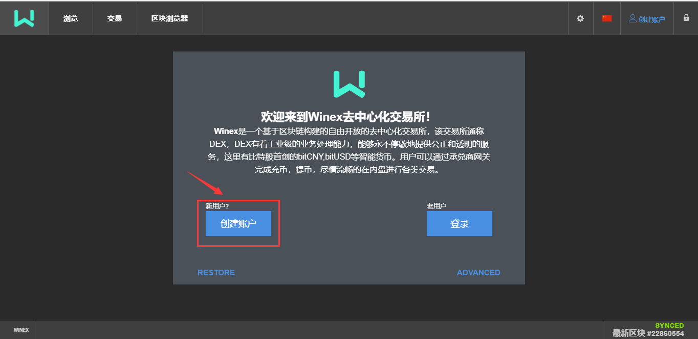
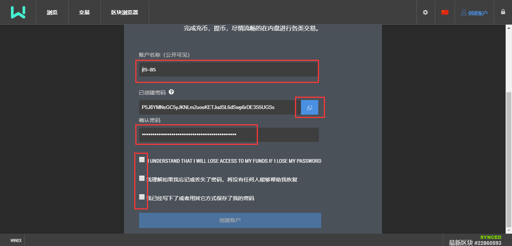

如何注册
点击创建用户，填写你的账号名，账号名是用英文字母与数字组合，或者有一个“-”。 这里注册不需要用户手机号或者邮箱，区块链的世界是自由的。 记录下系统为你生成的唯一密码，复制并确认之后，勾选底部的三个重要提示。丢失账户和密码，任何人都无法恢复，资产将无法找回。
 再次提醒你记录账户密码，请认真阅读。如果已经记录好，直接点“OK,take me to the dashboard"，进入你的账户页面

认识交易所
交易所主面板显示当前交易所热门的交易对
账户，显示你的资产情况，包括资产列表，委单，抵押的债仓，以及账户的动态信息
转账，可以指定对方账号，直接转资产给对方

如何充值
以ETC为例，想要进入内盘交易，先要将你钱包里的ETC充值进入内盘。 选择充提/提现，选择Winex承兑商，再找到ETC，生成充值地址。

以在zb网站为例，找到ETC提币的页面

将zb的ETC提币到你第1步生成的地址上。
其他的币种充值都类似。
如何充值bitCNY？
bitCNY是人民币在内盘的代币名称，他和人民币是1：1锚定。目前提供充值bitCNY有比特帝国和鼓鼓钱包，比特帝国是国内比较早的内盘交易所，充值bitCNY是通过人人承兑方式。地址：http://btsabc.org/wall.php，找到对应的人进行聊天确认。
或者可通过Magic Wallet提供的人人承兑服务进行充值提现，地址：https://www.magicw.net
提现内盘的代币
在充值提现页面，找到Winex网关，选择你要提币的种类ETC，选择提现，点击确认。

填写相应的信息后，提交确认